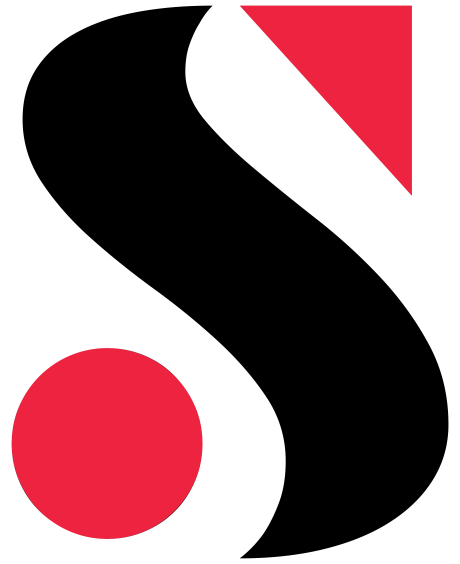

Synergy Dot.
Connecting our own dots. A digital expression of the clarity, energy and creative ambition behind Synergy Dot.

The thinking
behind the work.
The challenge
Create a digital home that brings our services together, communicates a clear point of view and makes starting a conversation effortless.
The approach
The original brand mark anchors the identity. Its red dot becomes a purposeful accent, supported by expressive typography, generous space and a simple journey from introduction to work, services and contact.
The scope
- Digital visual system
- Responsive agency website
- Reusable project page structure
The outcome
A lightweight digital presence with direct contact routes and room for the portfolio to grow. Built with static pages and minimal JavaScript. Commercial results will be added only when measured and verified.